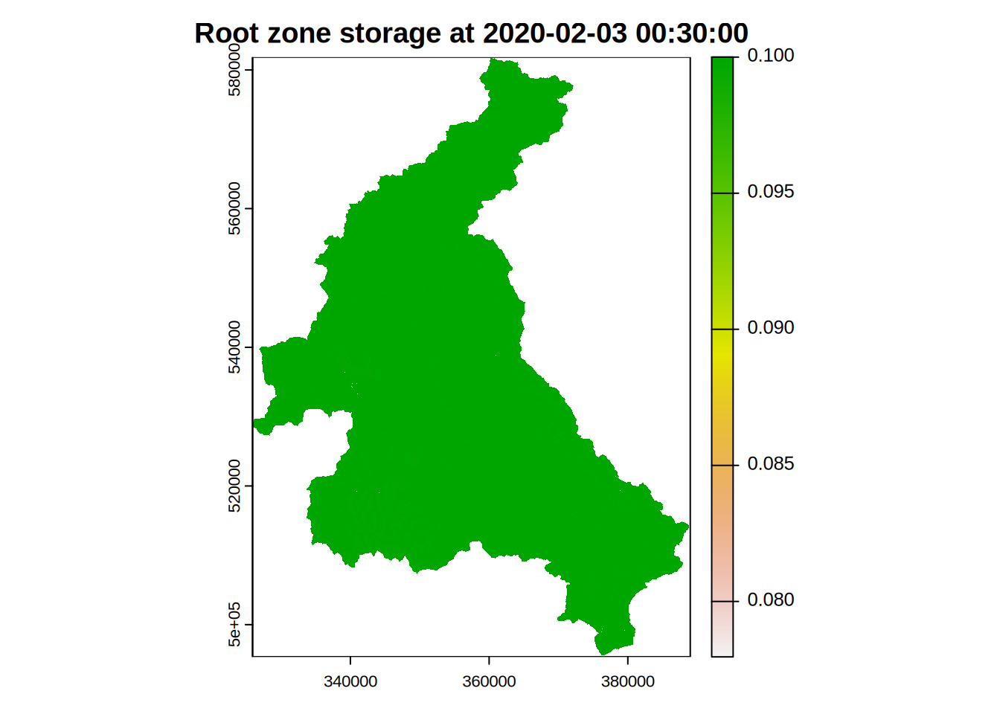

Running a Simulation
Aim
To simulate a Dynamic TOPMODEL of the Eden catchment, visualise the output and show how the parameters may be altered.
Installing required R packages
No further packages are required beyond those used in processing the GIS processing and observed data.
A Simulation
The minimum data need to perform a simulation with dynatop is a model, such as that output by dynatopGIS in the previous section and observed data in the format introduced earlier.
Load the previously created data
mdl <- readRDS(file.path(".","processed","atb_band_model.rds"))
obs <- readRDS(file.path(".","processed","obs.rds"))Attach the dynatop package so it is available in the R session then initialise a dynatop object by loading the model
library(dynatop)
library(xts)
ctch_mdl <- dynatop$new(mdl)This step performs some basis checks on the model for consistency. The data can then be added; again simple checks are performed.
ctch_mdl$add_data(obs)There are two types of HRU; hill-slope and channel. These can be run individually with the sim_hillslope and sim_channel methods or sequentially with the sim method. The individual methods check that suitable input data is available, but not how it was generated.
The initial states of the simulations can be specified in the model object. If, as in the case of this example, the states are not specified then any attempt to perform a simulation will fail.
## expect a failure
ctch_mdl$sim()
#> Error in self$sim_hillslope(keep_states, sub_step, tol, max_it): Model states are either not initialised or have non-finite valuesThe states need to be initialised using the initialise method. This presumes:
- The surface is dry
- The root zone is partially full (the s_rz0 parameter)
- There is a specified (see below) uniform maximum recharge rate representing the flow from the unsaturated to saturated zone
- the saturated zone is at a steady state
- the unsaturated zone storage ensures that the recharge rate from the unsaturated zone to the saturated zone is as close to the maximum as possible
The uniform maximum recharge rate is input to the method call. A simple way of getting an initial estimate of this is to divide the observed discharge at the outlet of the catchment for the first time step by the hill-slope surface area. This works best if the first time step has no rainfall and is close to base-flow.
## determining the initial recharge rate ad setting it in the model
mdl$hillslope$r_uz_sz0 <- as.numeric(obs$Sheepmount_obs[1]) / sum(mdl$hillslope$area)In the following we initialise the states and then perform the simulation, using the chaining of commands.
ctch_mdl$initialise()$sim()
#> Warning in private$sim_hs(keep_states, sub_step[1], tol, max_it): Courant number for surface zone is over 0.7
#> Suggest maximum sub step is: 620.43secondsMass balance
It is possible to output the mass balance for each time step of the simulation using the get_mass_errors method. The returns an xts object giving the volumes in the hill-slope states at the start and end of the time step along with the other fluxes as volumes. This can easily be used to plot the errors as shown below.
mb <- ctch_mdl$get_mass_errors()
head(mb)
#> initial_state e_t p channel_inflow final_state
#> 2020-02-01 00:15:00 -288905381 0 633.6767 164041.2 -289068788
#> 2020-02-01 00:30:00 -289068788 0 633.6767 165981.2 -289234136
#> 2020-02-01 00:45:00 -289234136 0 6368.0334 167404.6 -289395173
#> 2020-02-01 01:00:00 -289395173 0 6368.0334 168499.8 -289557304
#> 2020-02-01 01:15:00 -289557304 0 2144.2530 169404.9 -289724565
#> 2020-02-01 01:30:00 -289724565 0 2144.2530 170180.4 -289892601
#> error
#> 2020-02-01 00:15:00 -4.172325e-07
#> 2020-02-01 00:30:00 5.960464e-08
#> 2020-02-01 00:45:00 -2.384186e-07
#> 2020-02-01 01:00:00 1.788139e-07
#> 2020-02-01 01:15:00 -5.960464e-08
#> 2020-02-01 01:30:00 3.576279e-07
plot( mb$err , main="Mass balance error",ylab="m^3")
Visualisations
After a simulation it is possible to get or plot output. Three types of output are available:
- the flow at the gauges after simulating the channel HRUs
- the inflows to the channel HRUs after simulating the Hill-slope HRUs
- the current states of the system after simulating the Hill-slope Grus
All have methods for plotting the data or returning in as a variable as shown in the following
Gauge flows
## For simulated flows at the gauge sites
sim_gauge <- ctch_mdl$get_gauge_flow() ## extract the flow as an xts object
head(sim_gauge)
#> Bampton Grange Burnbanks Coal Burn Cummersdale Dacre Bridge
#> 2020-02-01 00:15:00 6.922665 3.687484 0.1121917 19.10354 2.830244
#> 2020-02-01 00:30:00 6.923307 3.687997 0.1127787 19.10403 2.830945
#> 2020-02-01 00:45:00 6.925086 3.688838 0.1141375 19.10544 2.832884
#> 2020-02-01 01:00:00 6.927771 3.689555 0.1152398 19.10764 2.835804
#> 2020-02-01 01:15:00 6.931631 3.691478 0.1161622 19.11043 2.839552
#> 2020-02-01 01:30:00 6.937380 3.694618 0.1169756 19.11485 2.844093
#> Eamont Bridge Great Corby Greenholme Harraby Green
#> 2020-02-01 00:15:00 16.15439 120.7335 28.00407 7.226305
#> 2020-02-01 00:30:00 16.15487 120.7340 28.00458 7.226635
#> 2020-02-01 00:45:00 16.15614 120.7352 28.00602 7.227558
#> 2020-02-01 01:00:00 16.15799 120.7370 28.00866 7.228968
#> 2020-02-01 01:15:00 16.16060 120.7397 28.01283 7.230802
#> 2020-02-01 01:30:00 16.16496 120.7444 28.01828 7.233113
#> Hynam Bridge Kirkby Stephen Newbiggin Bridge
#> 2020-02-01 00:15:00 5.075924 7.450382 6.950593
#> 2020-02-01 00:30:00 5.077072 7.450675 6.951242
#> 2020-02-01 00:45:00 5.080164 7.451768 6.953024
#> 2020-02-01 01:00:00 5.084637 7.454195 6.955675
#> 2020-02-01 01:15:00 5.091482 7.458367 6.959035
#> 2020-02-01 01:30:00 5.101849 7.465175 6.963006
#> Pooley Bridge Upstream Sheepmount Stockdalewath
#> 2020-02-01 00:15:00 16.41975 181.5979 3.221288
#> 2020-02-01 00:30:00 16.42057 181.5983 3.221942
#> 2020-02-01 00:45:00 16.42282 181.5992 3.223746
#> 2020-02-01 01:00:00 16.42582 181.6009 3.226893
#> 2020-02-01 01:15:00 16.42973 181.6037 3.232239
#> 2020-02-01 01:30:00 16.43592 181.6075 3.239078
#> Temple Sowerby Udford
#> 2020-02-01 00:15:00 55.18811 38.22572
#> 2020-02-01 00:30:00 55.18864 38.22631
#> 2020-02-01 00:45:00 55.19007 38.22791
#> 2020-02-01 01:00:00 55.19220 38.23029
#> 2020-02-01 01:15:00 55.19496 38.23330
#> 2020-02-01 01:30:00 55.19938 38.23677
## Plot the simulated flows at the gauges
ctch_mdl$plot_gauge_flow()
The observed gauge data is readily added and plotted
plot( merge(obs$Sheepmount_obs,sim_gauge),main="Simulated and observed flows",
legend.loc='topright') ### Channel Inflow
### Channel Inflow
## For inflows to the Channel HRU from the Hill-slope HRUs
channel_inflow <- ctch_mdl$get_channel_inflow() ## extract the flow as an xts object
## there is one column for each Channel HRU. The column names are the Channel HRU IDs (as strings)
## For example to see the start of the inflows to the 23,560 and 1602 channel HRUS
head(channel_inflow[,c("23","560","1602")])
#> 23 560 1602
#> 2020-02-01 00:15:00 0.02072877 0.03226040 0.03635419
#> 2020-02-01 00:30:00 0.02100487 0.03248684 0.03671352
#> 2020-02-01 00:45:00 0.02121515 0.03260441 0.03695026
#> 2020-02-01 01:00:00 0.02138626 0.03265170 0.03710908
#> 2020-02-01 01:15:00 0.02153389 0.03265358 0.03721800
#> 2020-02-01 01:30:00 0.02166718 0.03262597 0.03729446
## Plot the total inflow to all channel HRUs from the Hill-slopes
ctch_mdl$plot_channel_inflow(total=TRUE)
## setting total to FALSE plots all the channel HRUs inflows individuallyWhile the total channel HRU inflow is useful it may also be desirable to see if the flux is coming from the surface or saturated zones.
## To get the inflows to the Channel HRU from the Hill-slope HRUs separated by surface and saturated zone contributions
sep_channel_inflow <- ctch_mdl$get_channel_inflow(separate=TRUE)
## for example the start of the inflow to the Channel HRUs with ID 23, 560 and 1602
head(sep_channel_inflow$saturated[,c("23","560","1602")]) ## inflow from the saturated zone
#> 23 560 1602
#> 2020-02-01 00:15:00 0.02072877 0.03226040 0.03635419
#> 2020-02-01 00:30:00 0.02100487 0.03248684 0.03671352
#> 2020-02-01 00:45:00 0.02121515 0.03260441 0.03695026
#> 2020-02-01 01:00:00 0.02138626 0.03265170 0.03710908
#> 2020-02-01 01:15:00 0.02153389 0.03265358 0.03721800
#> 2020-02-01 01:30:00 0.02166718 0.03262597 0.03729446
head(sep_channel_inflow$surface[,c("23","560","1602")]) ## inflow from the surface zone
#> 23 560 1602
#> 2020-02-01 00:15:00 0 0 0
#> 2020-02-01 00:30:00 0 0 0
#> 2020-02-01 00:45:00 0 0 0
#> 2020-02-01 01:00:00 0 0 0
#> 2020-02-01 01:15:00 0 0 0
#> 2020-02-01 01:30:00 0 0 0
## For an overall picture
ctch_mdl$plot_channel_inflow(total=TRUE,separate=TRUE)
Current States
The current states of the model can be extracted and plotted.
## extract the current states as a data.frame
current_state <- ctch_mdl$get_states()
## columns correspond to the Hill-slope HRU ID, and the storage's in each of the four zones
head(current_state)
#> [1] 5209 5208 5207 5206 5205 5204
## a single state can be plotted at one time
ctch_mdl$plot_state("s_sz")
#> Warning in showSRID(SRS_string, format = "PROJ", multiline = "NO", prefer_proj =
#> prefer_proj): Discarded datum OSGB 1936 in Proj4 definition
#> Warning in OGRSpatialRef(dsn, layer, morphFromESRI = morphFromESRI, dumpSRS =
#> dumpSRS, : Discarded datum OSGB_1936 in Proj4 definition: +proj=tmerc +lat_0=49
#> +lon_0=-2 +k=0.9996012717 +x_0=400000 +y_0=-100000 +ellps=airy +units=m +no_defs
Changing Parameters
The parameters are stored in the model which is made up of standard R data.frame’s. Using the properties within the data frame, particularly the values stored in the class columns makes changing parameter straightforward
## Some simple manipulations of the Hill-slope HRU parameters
## set all Hill-slope HRU exponential decay (m) parameters to 0.03
mdl$hillslope$m <- 0.03
## set all Hill-slope HRU maximum depth parameters (D) to 10m
## where the topographic index is in the highest band
## Note that cls_* are the values taken by the * class in the model generation
mdl$hillslope$D[ mdl$hillslope$cls_atb_20==20 ] <- 10Extracting Intermediate States
Unless requested dynatop keeps only the current state during a simulation. To request that states are other time steps are kept a vector of times must be passed in the call to the sim or sim_hillslope method
## Let us repeat the same simulation
## keeping the states for every other time step
keep_times <- index(obs)[seq(2,nrow(obs),by=2)] ## an vector of time steps
ctch_mdl$initialise()$sim(keep_states=keep_times) ## passing the vector of time steps to the call
#> Warning in private$sim_hs(keep_states, sub_step[1], tol, max_it): Courant number for surface zone is over 0.7
#> Suggest maximum sub step is: 620.43secondsThe record of the states can know be extracted. While there is an entry for every time step only those request will be populated
## extract the record of the states at each time step
state_rec <- ctch_mdl$get_states(record=TRUE) ## returns the whole record of states
head(names(state_rec)) ## the elements in state_rec are named after the time
#> [1] "2020-02-01 00:15:00" "2020-02-01 00:30:00" "2020-02-01 00:45:00"
#> [4] "2020-02-01 01:00:00" "2020-02-01 01:15:00" "2020-02-01 01:30:00"
head(state_rec[[format(keep_times[1])]]) ## those in keep_times are populated
#> id s_sf s_rz s_uz s_sz
#> 1 5209 0 0.0375 0.0003660856 0.1613671
#> 2 5208 0 0.0375 0.0004425065 0.1786786
#> 3 5207 0 0.0375 0.0004532159 0.1808761
#> 4 5206 0 0.0375 0.0002915119 0.1432278
#> 5 5205 0 0.0375 0.0004310184 0.1759470
#> 6 5204 0 0.0375 0.0003909153 0.1670567
head(state_rec[[format(index(obs)[1])]]) ## those not in keep_times are empty
#> data frame with 0 columns and 0 rowsThe visualisation of the state record is possible either as a time series
## Create a time series plot of the saturated zone deficit
s_sz_rec <- lapply(state_rec,function(x){x$s_sz}) ## extra the saturated deficit from each time step
s_sz_rec <- do.call(rbind,s_sz_rec) ## convert them into a matrix
head(rownames(s_sz_rec)) ## the row names are the the times carried over from the names in state_rec
#> [1] "2020-02-01 00:30:00" "2020-02-01 01:00:00" "2020-02-01 01:30:00"
#> [4] "2020-02-01 02:00:00" "2020-02-01 02:30:00" "2020-02-01 03:00:00"
s_sz_rec <- as.xts(s_sz_rec) ## convert to and xts object using the rownames as times
names(s_sz_rec) <- paste(state_rec[[format(keep_times[1])]]$id) ## give column names as the HRU id
## for a the Hill-slope HRUs with IDs 2487, 3598 and 5201 the start of the time series are
head(s_sz_rec[,c("2487","3598","5201")])
#> 2487 3598 5201
#> 2020-02-01 00:30:00 0.1784482 0.1716829 0.1709460
#> 2020-02-01 01:00:00 0.1786865 0.1713872 0.1718702
#> 2020-02-01 01:30:00 0.1791119 0.1712940 0.1729486
#> 2020-02-01 02:00:00 0.1795988 0.1712795 0.1740589
#> 2020-02-01 02:30:00 0.1801035 0.1713015 0.1751615
#> 2020-02-01 03:00:00 0.1806111 0.1713453 0.1762438
## and a plot can be generated
plot(s_sz_rec[,c("2487","3598","5201")],main="Saturated zone deficit for select HRU",legend.loc="topright")
or as a map
## Create a map of the root zone storage at 2020-02-03 02:00:00
s_rz_val <- state_rec[["2020-02-03 02:00:00"]][,c("id","s_rz")] ## extract the id and rz storage
## create a map of values by substituting s_rz for the id in the hru_id map
hru_id <- raster(ctch_mdl$get_model()$map$hillslope) ## open map from from file names stored in the model
#> Warning in showSRID(SRS_string, format = "PROJ", multiline = "NO", prefer_proj =
#> prefer_proj): Discarded datum OSGB 1936 in Proj4 definition
s_rz_map<- raster::subs(hru_id, s_rz_val) ## substitute values into the map of HRU id numbers
## and plot
plot(s_rz_map,main="Root zone storage at 2020-02-03 02:00:00")
Hot Starting and Saving
Hot starting; that is starting a simulation with the final states of a previous simulation can be achieved by simply not re-initialising the dynatop object before the next call to sim
## initialise and simulate the model
ctch_mdl$initialise()$sim()
#> Warning in private$sim_hs(keep_states, sub_step[1], tol, max_it): Courant number for surface zone is over 0.7
#> Suggest maximum sub step is: 620.43seconds
head(ctch_mdl$get_states()) ## state values after the initial run
#> [1] 5209 5208 5207 5206 5205 5204
## run again without initialising
## This will use the final states of the last simulation as the starting states
ctch_mdl$sim()
#> Warning in private$sim_hs(keep_states, sub_step[1], tol, max_it): Courant number for surface zone is over 0.7
#> Suggest maximum sub step is: 620.43seconds
head(ctch_mdl$get_states()) ## different state values after the second run
#> [1] 5209 5208 5207 5206 5205 5204If you want to save the model and current states at the end of a simulation do not save the dynatop object. Instead extract and save he model including the current states and save that.
new_mdl <- ctch_mdl$get_model() ## get the model structure from the dynatop object
head(new_mdl$hillslope) ## as the original model but will final states included
#> id area atb_bar s_bar min_dst width s_sf s_rz s_uz
#> 3512 5209 10000 12.41351 0.04063333 338 100 0 0.04929707 4.613085e-18
#> 3511 5208 10000 11.99229 0.06247205 337 100 0 0.04929707 1.573717e-17
#> 3510 5207 10000 12.05755 0.06632578 336 100 0 0.04929707 1.319727e-17
#> 3509 5206 10000 12.90779 0.02587451 335 100 0 0.04929707 9.368450e-19
#> 3508 5205 10000 12.21474 0.05881537 335 100 0 0.04929707 8.401068e-18
#> 3507 5204 30000 12.32571 0.04691417 334 300 0 0.04929707 6.126388e-18
#> s_sz cls_atb_20_band cls_atb_20 cls_band opt r_sfmax c_sf s_rzmax
#> 3512 0.2694597 3512 4 338 bexp Inf 0.1 0.05
#> 3511 0.2865625 3511 4 337 bexp Inf 0.1 0.05
#> 3510 0.2840043 3510 4 336 bexp Inf 0.1 0.05
#> 3509 0.2495907 3509 5 335 bexp Inf 0.1 0.05
#> 3508 0.2776035 3508 4 335 bexp Inf 0.1 0.05
#> 3507 0.2732650 3507 4 334 bexp Inf 0.1 0.05
#> t_d ln_t0 c_sz m D m_2 omega s_rz0 r_uz_sz0
#> 3512 7200 -2 NA 0.04 NA NA NA 0.75 1e-06
#> 3511 7200 -2 NA 0.04 NA NA NA 0.75 1e-06
#> 3510 7200 -2 NA 0.04 NA NA NA 0.75 1e-06
#> 3509 7200 -2 NA 0.04 NA NA NA 0.75 1e-06
#> 3508 7200 -2 NA 0.04 NA NA NA 0.75 1e-06
#> 3507 7200 -2 NA 0.04 NA NA NA 0.75 1e-06